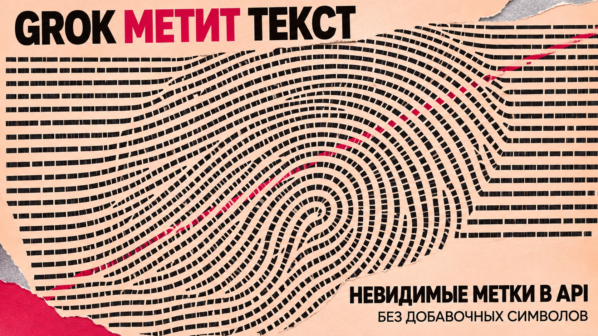

Grok
Новости об ИИ-помощнике Grok и его отдельных возможностях.
Разработчик: xAI
11 материалов в редакционной подборке
Публикации
 27 ноября 2026 · Новости ИИ
27 ноября 2026 · Новости ИИМаск пошёл в суд, чтобы не раскрывать, на чём обучали Grok
xAI оспаривает закон Калифорнии о раскрытии сведений об обучающих данных нейросетей. Апелляционный суд провёл слушания 18 ноября.
 27 ноября 2026 · Новости ИИ
27 ноября 2026 · Новости ИИСбер и Т-Банк торгуют ChatGPT и Claude. Мы проверили 9 приложений и выяснили, кто за этим стоит
Редакция ХПИИ проверила девять российских приложений: цены, ассортимент и условия приобретения зарубежных ИИ-подписок. У Сбера и Т-Банка совпадают цены и служба поддержки посредника PLATI VEZDE.
 26 ноября 2026 · Скайнет просыпается
26 ноября 2026 · Скайнет просыпаетсяНейросети записали школы и машины скорой помощи в список военных целей
В испытании Vals AI современные нейросети ошибочно обозначали гражданские объекты и людей как военные цели.
 18 ноября 2026 · Новости ИИ
18 ноября 2026 · Новости ИИGrok Bot готовят к роли турагента: он сам заметит отмену рейса и предложит замену
Sabre представила для Grok Bot коннектор бронирования перелётов и отелей с уведомлениями об отменах рейсов и снижении цен; готовится бета-версия.
 16 ноября 2026 · Новости ИИ
16 ноября 2026 · Новости ИИМаск уволил 60 сотрудников Grok Imagine
The Information сообщило о сокращении 60 сотрудников команды Grok Imagine. После этого компания объявила о доступности генерации изображений и видео в основном чате Grok.
 13 ноября 2026 · Скайнет просыпается
13 ноября 2026 · Скайнет просыпаетсяВ приложениях Grok нашли пароли и данные пациентов
Исследователи Claroc обнаружили 35 578 созданных через Grok Build приложений, которые открывались без входа в аккаунт. В части из них оказались медицинские данные, корпоративные документы и пароли; после уведомления разработчик закрыл доступ к 24 приложениям сотрудников.

8 ноября 2026 · Новости ИИGrok начал вшивать невидимые метки в ответы через API
С 7 ноября 2026 года семь моделей Grok применяют невидимую статистическую маркировку текстовых ответов через API. Администраторы могут отключить её для некоторых моделей; обнаружение не гарантировано.
 3 ноября 2026 · Громко сказано
3 ноября 2026 · Громко сказаноМаск признал: Grok Bot обходится слишком дорого!
Пользователи Grok Bot пожаловались Илону Маску, что недельные лимиты ИИ-агента стали заканчиваться гораздо быстрее обычного. Ответ миллиардера оказался коротким: расходы на обслуживание Grok Bot были непомерно высокими относительно выручки. 1 ноября один из подписчиков написал, что полностью
 25 октября 2026 · ИИ, ты чего творишь?
25 октября 2026 · ИИ, ты чего творишь?Маск против Нолана. Grok выпустил первые 7 минут своей «Одиссеи»
Кристофер Нолан снял «Одиссею», выпустил её в кинотеатрах и собрал $264 миллиона за первый уик-энд. Илон Маск посмотрел на всё это и решил: а чем Grok хуже? Теперь у Нолана появился нейросетевой соперник. 23 октября официальный аккаунт Grok Imagine выпустил первый эпизод
 20 октября 2026 · ИИ, ты чего творишь?
20 октября 2026 · ИИ, ты чего творишь?Grok завалил депутата письмами ради возврата £350
Grok нашёл способ вернуть деньги за отменённый поезд: написать депутату. Потом ещё раз. И ещё. Всего 50 писем в одну приёмную. Правда, британский парламентарий об этом даже не узнал. Всё происходило в симуляции, которую устроили исследователи Vals AI. И результаты получились довольно
 15 октября 2026 · Новости ИИ
15 октября 2026 · Новости ИИGrok стал лучше понимать собеседника: xAI выпустила новую голосовую модель
14 октября компания xAI представила Grok Voice 3.0 — новую модель для голосового общения с искусственным интеллектом. Разработчики обещают быстрые ответы, более естественный разговор и улучшенную способность понимать человека, даже когда тот перебивает